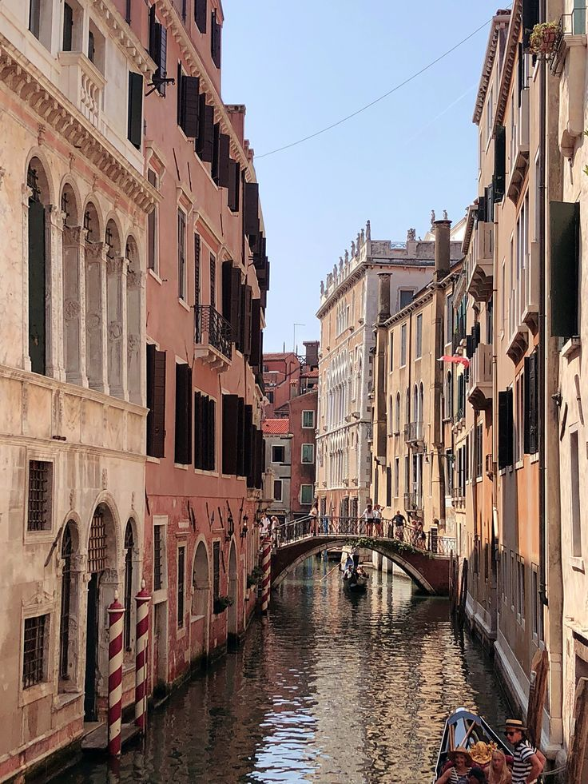
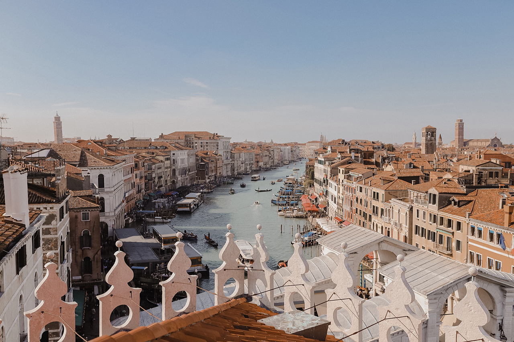

According to tradition, Venice was founded in 421 AD. At that time a Celtic people called the Veneti lived along the coast of what is now Northeast Italy. Since 49 BC they had been Roman citizens. However, in 453 Attila the Hun invaded Italy. In terror, some Veneti fled to islands in the lagoon and built a village there. They soon formed a loose federation. Then in 568 AD, a people called the Lombards invaded the mainland and many Veneti fled to the islands swelling the population.

Venice developed a creation myth that it was founded by people fleeing Troy, but it was probably formed in the sixth century C.E., when Italian refugees fleeing Lombard invaders camped on the islands in the Venice lagoon. There is evidence for a settlement in 600 C.E., and this grew, having its own bishopric by the end of the 7th century. The settlement soon had an outside ruler, an official appointed by the Byzantine Empire, which clung onto a part of Italy from a base in Ravenna. In 751, when the Lombards conquered Ravenna, the Byzantine dux became a Venetian Doge, appointed by the merchant families who had emerged in the town.
The construction of Venice started in the 5th century AD after the fall of the Roman Empire when refugees from the mainland fled to the islands in the lagoon. Soon, there were so many of them that they needed more space, so they drove wooden poles deep into the clay beneath the ground. On top of the wooden poles, they built wooden platforms, and then on top of that, they constructed their buildings—all of which means that Venice is basically built on wood and water. The wood has miraculously avoided decay over the centuries since it’s underwater and not exposed to oxygen, and also because the saltwater has hardened the wood into a more durable stone-like consistency. Still, today Venice is sadly sinking every year, mainly due to the steadily increasing sea levels.
